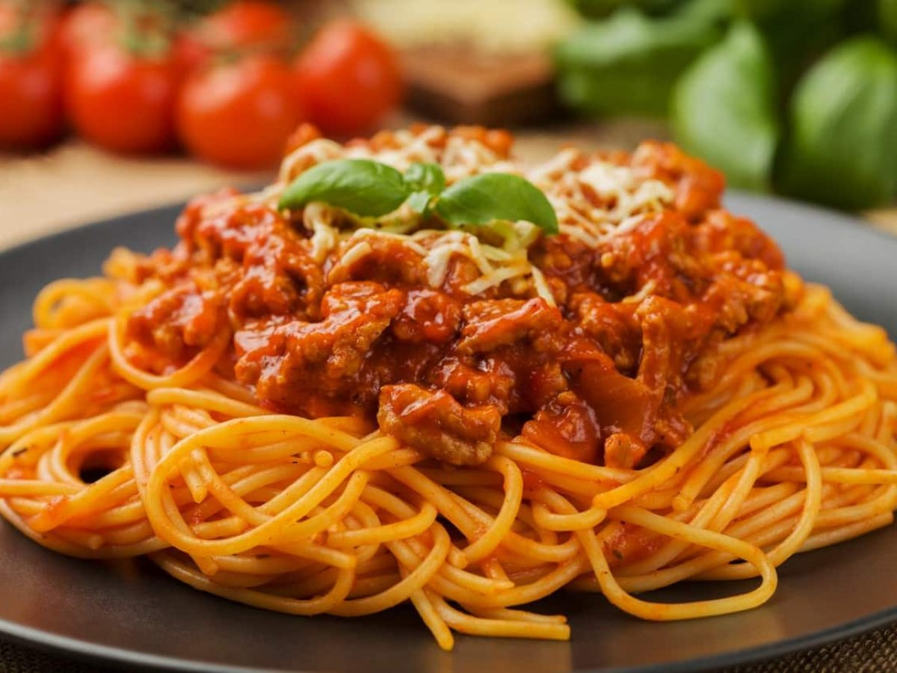

Home
Bolognese Pasta

Description
A hearty pasta dish with flavorful ground beef in a rich tomato sauce, topped with cheese and baked to perfection. A simple, satisfying crowd-pleaser.
Ingredients
- 300g of pasta (spaghetti, penne, or your choice)
- 300g of ground beef
- 1 onion, chopped
- 2 tablespoons of olive oil
- 2 cloves of garlic, minced
- 1 can of tomato sauce (or crushed tomatoes)
- 2 tablespoons of olive oil
- Salt and pepper to taste
- Fresh basil or parsley for garnish (optional)
- Grated parmesan cheese (optional)
Steps
- Cook the pasta in salted boiling water until al dente, then drain.
- In a pan, heat the olive oil and sauté the onion and garlic until soft and fragrant.
- Add the ground beef and cook until browned, seasoning with salt and pepper.
- Pour in the tomato sauce and let it simmer for 10–15 minutes until the sauce thickens.
- Toss the cooked pasta with the Bolognese sauce.
- Serve on a plate and garnish with fresh basil or parsley and grated parmesan cheese if desired.